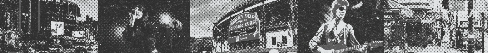

Internship
I led a startup's mobile app redesign as it transitioned to the new Live Time brand. The goal was to modernize the app's appearance while preserving the playful spirit of the original design. I developed the brand identity, built a comprehensive design system, and applied it across the app, which is now live on the App Store.
The existing Lynkr brand required modernization to better appeal to its Gen Z audience and drive user growth. Although the founder had already chosen the name Live Time, I was responsible for translating that direction into a cohesive visual identity and user experience.

Pink was Lynkr's primary brand color, used throughout the original app. However, user feedback revealed that the original shade made the app feel overly feminine.
To address user concerns, I refined the pink to a shade that felt more modern and inclusive, pairing it with black and white to establish Live Time's primary colors. These colors were tested with accessibility checkers to ensure readability for all users.

To add tonal variety, I introduced a lighter shade of pink and two complementary grays. After finalizing the primary palette, I developed five secondary colors and their lighter variations to provide greater flexibility across the app's design.

The rebrand introduced two new fonts. To maintain a sleek yet playful feel, I selected Rockhill Sans as the display font since it is both clean and modern while still full of personality. This font is primarily used for branding and display text within the app.
For readability, I chose Hanken Grotesk as the primary font for all key information, ensuring the app remains clear and easy to navigate.

The flamingo logo was retained but redesigned to align with the new modern look. The redesign, first sketched on paper and then refined in Adobe Illustrator, uses clean, simple lines to make the logo easier to recognize and even draw from memory. The redesign is highly versatile, allowing the logo to be seamlessly incorporated into a text-based version.

With the new visual identity defined, I redesigned every screen in the app to bring the rebrand to life. The goal was to simplify the experience and deliver a clean, intuitive interface inspired by modern apps like Airbnb.


The process began with greyboxing a low-fidelity version of the app in Figma to refine user flows and layouts. Once the flows and layouts were finalized, I developed a high-fidelity prototype incorporating the new branding. In total, I designed over 150 screens, ensuring a consistent and cohesive experience across the entire app.
A personalized feed surfacing upcoming events and activity from the user's community.
Event details, RSVPs, and location information laid out in a clean, easy-to-scan view.
A hub for the communities and groups a user belongs to, making it easy to stay connected.
A streamlined flow for hosts to create and publish new events in just a few steps.

The rebranded app was released on the App Store as Live Time in December 2025.

I was entrusted with a significant challenge early in my career. By grounding every decision in user research and a user-centered design, I delivered a rebrand I'm proud of. The experience sharpened my skills in branding, UI/UX design, and design systems while giving me the opportunity to lead a high-impact startup rebrand.
I would have implemented analytics following the rebrand's release to track user flows, identify drop-off points, and prioritize future functionality improvements based on user behavior.
I would have experimented with connecting Claude Code to the design system to accelerate prototyping and design exploration.